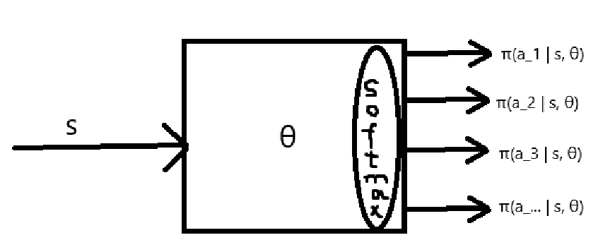
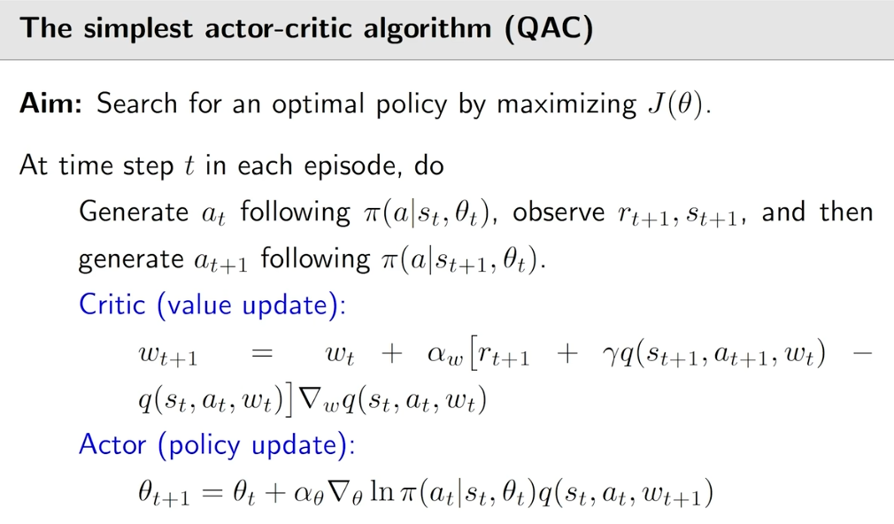

值函数近似(DQN)、策略梯度方法(REINFORCE)、Actor-Critic方法
值函数近似
引入
上一章介绍了时序差分方法，也就是model-free下求state/action value/optimal action value的迭代法。
其思路是在MC Exploring Starts上演变过来的，即完全的记忆化。既然使用了记忆化，那么就有记忆化数组，即tabular。
这一章的值函数近似不是基于tabular，而是基于函数。这是有实际意义的，比如action value是连续的时候，离散化后用tabular存就很有可能存不下，所以我们需要一个连续的算法。
从另一个方面考虑，假如state-action pair太多太多，那么我很难把全部的state-action pair都估计到，那么假如我们有一个函数，那么无论你状态有多少个，因为我是表达式，所以随便给一个状态我都能代入表达式估计出来。
想到啥了吗？用函数拟合任意一个散点图，是的，神经网络最喜欢干这件事了。
Interesting, right？
目标函数
我们的目标就是通过拟合的方法估计\(v_\pi(s)\)嘛，所以\(v_\pi(s)\)是真实的值，我们拟合的函数是\(\hat{v}(s, w)\)。
注意这是个函数哦，\(s\)是自变量，\(w\)是参数。
显然我们的优化函数为： \[ J(w) = \mathbb{E}[(v_\pi(S) - \hat{v}(S, w))^2] \] 显然，我们希望\(J(w)\)尽可能小。
这个优化函数是标准形式，但实际计算的时候我们需要将里面的随机变量和期望替换为样本。
优化算法和函数设计
前面我们有了目标函数，那么现在我们就来minimize \(J(w)\).
来计算下\(J(w)\)的导数： \[ \begin{align*} \nabla J(w) &= \nabla \mathbb{E}[(v_\pi(S) - \hat v(S, w))^2] \\ &= \mathbb{E}[\nabla (v_\pi(S) - \hat v(S, w))^2] \\ &= 2\mathbb{E}[(v_\pi(S) - \hat v(S, w))(-\nabla_w \hat v(S, w))] \\ &= -2\mathbb{E}[(v_\pi(S) - \hat v(S, w))\nabla_w \hat v(S, w)] \end{align*} \] 当然，用SGD即可，那么迭代式为： \[ w_{t+1} = w_t + \alpha_t(v_\pi(s_t) - \hat v(s_t, w_t))\nabla_w \hat v(s_t, w_t) \] 可以看出，上面这个迭代式是没法用的。因为\(v_\pi(s_t)\)我们不知道啊。
所以可以结合MC或者TD algorithm，这里我就结合TD algorithm其中的迭代式： \[ v_{t+1}(s_t) = v_t(s_t) - \alpha_t(s_t)[v_t(s_t) - [r_{t+1} + \gamma v_t(s_{t+1})]] \] 那么上面的迭代式可以改写为： \[ w_{t+1} = w_t + \alpha_t(r_{t+1} + \gamma \hat v(s_{t+1}, w_t) - \hat v(s_t, w_t)) \cdot \nabla_w \hat v(s_t, w_t) \] 那么我们可以得到TD + 值函数近似算法： \[ \begin{align*} &\textbf{Initialization: } \text{A function $\hat v(s, w)$ that is a differentiable in $w$. Initial parameter $w_0$.} \\ &\text{For each episode generated following the polticy $\pi$, do} \\ &\quad\quad \text{For each step $(s_t, r_{t+1}, s_{t+1})$, do} \\ &\quad\quad\quad\quad w_{t+1} = w_t + \alpha_t[r_{t+1} + \gamma \hat v(s_{t+1}, w_t) - \hat v(s_t, w_t)] \cdot \nabla_w \hat v(s_t, w_t) \end{align*} \] 简洁而优美。
好了，就剩一件事了。\(\hat v(s, w)\)这个函数如何设计？
一般现在有两种设计方案，第一种是设计为线性的，第二种是用神经网络去拟合。
先来看第一种：
\(\hat v(s, w) = \phi(s)^\mathrm{T}w\)，其中\(\phi\)是特征\(s\)的特征向量。
如何理解呢？就是你对于一个状态的value，看你想用什么特征来描述它，假设你用特征\(a_1, a_2, a_3, 1\)来描述一个状态\(s\)，那么其特征向量就为\([a_1, a_2, a_3, 1]^{\mathrm{T}}\)，那么函数就为：\(\hat v(s,w) = a_1w_1 + a_2w_2 + a_3w_3 + w_4\)。
所以这种方法的关键就是选好特征很关键。举个例子，比如想描述某人某时刻的state，那么特征就可以选择：身高、体重、性别。
再来看第二种：略，神经网络没啥数学推导，这里没必要再展开。
相同的，我们还可以得到Sarsa + 值函数近似算法： \[ w_{t+1} = w_t + \alpha_t[r_{t+1} + \gamma \hat q(s_{t+1}, a_{t+1}, w_t) - \hat q(s_t, a_t, w_t)] \cdot \nabla_w \hat q(s_t, a_t, w_t) \] 相同的，我们还可以得到Q-learning + 值函数近似算法： \[ w_{t+1} = w_t + \alpha_t[r_{t+1} + \gamma \max_{a \in \mathcal{A(s_{t+1})}} \hat q(s_{t+1}, a, w_t) - \hat q(s_t, a_t, w_t)] \cdot \nabla_w \hat q(s_t, a_t, w_t) \]
Deep Q-learning
Deep Q-learning，也可以叫deep Q-network，DQN。
此方法将DL那一套搬了过来，而且效果还很好。（这世界的本质难道真的是无限拟合？）
Deep Q-learning就是在Q-learning + 值函数近似的基础上，\(\hat q(s_t, a_t, w_t)\)用神经网络去算的一个算法。
回顾一下一下optimal bellman equation：
\[ q(s,a) = \mathbb{E}\left[ R_{t+1} + \gamma \max_{a \in \mathcal{A}(S_{t+1})} q(S_{t+1}, a) | S_t = s, A_t = a \right], \forall s, a \] 其实Q-learning本质就是在用迭代法使得\(q_t(s_t, a_t) \to r_{t+1} + \gamma \max_{a \in \mathcal{A}} q_t(s_t,a)\)
当用神经网络来拟合action values时，它与Q-learning一样，本质是在minimize这个函数： \[ J(w) = \mathbb{E}\left[ (R + \gamma \max_{a \in \mathcal{A}(S')} \hat q(S', a, w) - \hat q(S, A, w))^2 \right] \] 但是\(J(w)\)这个函数对\(w\)的梯度很难求，因为第二项和第三项都包含了\(w\)。所以这里原文作者用了一个trick。就是设置了两个\(w\)，一个叫\(w\)，一个叫\(w_T\)。\(w\)是持续更新的，\(w_T\)是各种一段时间更新一次的。那么，loss函数可以写为下面这种形式： \[ J(w) = \mathbb{E}\left[ (R + \gamma \max_{a \in \mathcal{A}(S')} \hat q(S', a, w_\mathrm{T}) - \hat q(S, A, w))^2 \right] \] 这样的话，\(w_\mathrm{T}\)就是个常数，那么\(\nabla_w J(w)\)就可以写出来了： \[ \nabla_w J(w) = -2 \mathbb{E}\left[ (R + \gamma \max_{a \in \mathcal{A}(S')} \hat q(S', a, w_\mathrm{T}) - \hat q(S, A, w)) \cdot \nabla_w \hat q(S, A, w) \right] \] 然后既然都用神经网络了，那么全部的思路都转换为深度学习。现在有了目标函数，梯度，就差数据了。
这里的数据就是很多\((s, a, r, s')\) pairs。
那么可以写出下列算法： \[ \begin{align*} &\text{Store the experience samples generated by $\pi_b$ in a replay buffer $\mathcal{B} = \{(s,a,r,s')\}$} \\ &\quad\quad \text{For each iteration, do} \\ &\quad\quad\quad\quad \text{Uniformly draw a mini-batch of samples from $\mathcal{B}$} \\ &\quad\quad\quad\quad \text{For each sample $(s,a,r,s')$, calculate the target values as $y_{\mathrm{T}} = r + \gamma \max_{a \in \mathcal{A}(s')}\hat q(s',a,w_{\mathrm{T}})$, where} \\ &\quad\quad\quad\quad \text{$w_\mathrm{T}$ is the parameter of the target network} \\ &\quad\quad\quad\quad \text{Update the main network to minimize $(y_\mathrm{T} - \hat q(s,a,w))^2$ using the mini-batch $\{(s,a,y_\mathrm{T})\}$} \\ &\quad\quad \text{Set $w_\mathrm{T} = w$ every $C$ iterations} \end{align*} \] 思考累了？换种角度重新看看DQN，会发现很简单。
首先，它有很多样本，每个样本会得到一个输出\(y_\mathrm{T}\)（通过optimal bellman equation得到的输出），我们的目的，就是让我们的网络\(\hat q(s,a,w)\)（其中\(s,a\)是输入，\(w\)是模型参数）尽可能拟合所以样本的\(y_\mathrm{T}\)。 所以就是个简单的深度学习问题。
策略梯度方法
引入
其实就是用连续函数去直接拟合policy，而非像以前那样关注中间量state values、action values。
具体来说，即通常用神经网络去拟合一个函数\(\pi(a | s, \theta)\)，其中\(\theta\)是网络参数。
那如何评价我们拟合的这个\(\pi(a | s, \theta)\)是否好坏呢？
所以我们需要一个指标\(J(\theta)\)，我们的任务，就是通过大量经验(样本)，去训练拟合这些样本，从而改变\(\theta\)，去maximize这个指标。
Interesting，越来越像深度学习的感觉了。
回顾一下，RL从MDP开始，MDP就是建立在标准的数学动态规划、矩阵论、概率论上的数学框架。解决RL问题就是在解决这个数学框架。求解方法有迭代法或者直接解方程。
后面因为概率很难提前获得，也就是我们通常不能开“上帝视角”，所以解数学框架的时候会缺失一些信息。因此我们通过大量采样来近似模拟这些信息，进行解题。这就诞生MC系列算法、时序差分系列算法。
再后来，我们的视角逐渐不再放在最底层的MDP框架公式中，而是在借助MDP框架的关键定义和公式上，试图直接利用数学，拟合出最佳的state values / action values / optimal policy。这就是Deep Q-learning、REINFORCE、Actor-Critic。
未来，至少在短期内可以预见的是，RL将于DL深度结合，且大量的DL技巧将会被运用到RL中来。
未来RL会走出一条什么样的路，我们不知道。但是，万一哪天RL突破了“RL”的定义和边界，我想，会是件令人激动的事。
目标函数
也就是引入中说到的\(J(\theta)\)是啥？
有两大类metrics，第一类是average state value，就是state values的加权平均。记作\(\bar{v}_\pi\)
第二类是average reward，就是\(r_\pi(s)\)的加权平均。记作\(\bar{r}_\pi\)
似乎这两个metrics，前一个更加远视，后一个更加近视（因为考虑的是immediate expected reward），但其实，对这两个指标做优化是等价的，因为在\(\gamma < 1\)的时候，满足：\(\bar{r}_\pi = (1 - \gamma)\bar{v}_\pi\)
average state value, \(\bar{v}_\pi\)，可写为： \[ \bar{v}_\pi = \sum_{s}d_\pi(s)v_\pi(s) = \mathbb{E}\left[ \sum_{t=0}^{\infty}\gamma^t R_{t+1} \right] \] 第一个定义就是本身的定义，\(d_\pi(s)\)是不同state的权重。
第二个定义不太直观，我来推导一下： \[ \mathbb{E}\left[\sum_{t=0}^{\infty}\gamma^{t}R_{t+1}\right] =\sum_{s\in\mathcal{S}}d(s)\mathbb{E}\left[\sum_{t=0}^{\infty}\gamma^{t}R_{t+1}|S_{0}=s\right]=\sum_{s\in\mathcal{S}}d(s)v_{\pi}(s) \] average reward, \(\bar{r}_\pi\)，可写为： \[ \bar{r}_\pi = \sum_{s}d_\pi(s)r_\pi(s) = \lim_{n \to \infty}\frac{1}{n}\mathbb{E}(\sum_{t=1}^{n}R_t) \] 第一个定义就是本身的定义，第二个定义很好理解，\(\bar{r}_\pi\)表达的就是所有immediate expected reward的期望，那么你把所有所有的\(R_t\)求平均就是\(\bar{r}_\pi\)了。
梯度计算
直接给出结论，详细证明去书里看： \[ \nabla_\theta\bar{r}_\pi\simeq\sum_sd_\pi(s)\sum_a\nabla_\theta\pi(a|s,\theta)q_\pi(s,a),\\\nabla_\theta\bar{v}_\pi=\frac1{1-\gamma}\nabla_\theta\bar{r}_\pi \] 当\(\gamma < 1\)时\(\nabla_\theta \bar{r}_\pi\)是约等于右边那一坨，当\(\gamma = 1\)时是严格等于。\(\gamma < 1\)时第二个式子成立。
但是上面那个式子还可以进行化简：
不妨对\(\ln \pi(a|s, \theta)\)求导，\(\nabla_\theta \ln \pi(a|s, \theta) = \frac{1}{\pi(a|s, \theta)} \cdot \nabla_\theta \pi(a|s, \theta)\)
\(\therefore \nabla_\theta \pi(a|s, \theta) = \pi(a|s, \theta)\nabla_\theta\ln\pi(a|s, \theta)\)
带回上面的式子，得：\(\nabla_\theta \bar{r}_\pi = \sum_{s}d_\pi(s)\sum_{a}\pi(a|s, \theta)\nabla_\theta\ln\pi(a|s, \theta)q_\pi(s, a)\)
那么就可以把\(\sum\)写为期望的方式：\(\nabla_\pi \bar{r}_\pi = \mathbb{E}_{\mathcal{S} \sim d, \mathcal{A} \sim \pi}\left[ \nabla_\theta\ln\pi(A|S, \theta) \cdot q_\pi(S, A) \right]\)
这样有什么好处呢？相当于我们只需要有state action pairs的样本，就可以去拟合\(\nabla_\pi\bar{r}_\pi\)了，相比于前面求和的形式，训练简直不要简单太多。很牛的idea。
但是既然你取了\(\ln\)，那么就要保证\(\pi(a|s, \theta) > 0\)，所以对于神经网络的话，在最后一层就要做一个softmax：

就行了，但是这样搞的话，policy就具有探索性了需要注意。
所以我们的为了更新matrics的梯度上升就可以这么写，用SGD： \[ \theta_{t+1} = \theta_t + \alpha\nabla_\theta\ln\pi(a_t|s_t, \theta_t)q_\pi(s_t,a_t) \] 但上面这个式子目前还用不了，因为\(q_\pi(s_t, a_t)\)我们不知道。所以用MC系列或者TD系列呗，如果你用MC去拟合\(q_\pi(s_t, a_t)\)，那么你就得到了REINFORCE算法，表示如下： \[ \begin{align*} &\textbf{Initialization: }\text{A parameterized function $\pi(a|s, \theta)$} \\ &\text{At time $k$, do} \\ &\quad\quad \text{Select $s_0$ and generate an episode following $\pi(\theta_k)$. Suppose the episode is $\{s_0, a_0, r_1, \cdots, s_{T-1}, a_{T_1}, r_T\}$.} \\ &\quad\quad \text{For $t = 0,1,\cdots, T-1$, do} \\ &\quad\quad\quad\quad q_t(s_t, a_t) = \sum_{k=t+1}^{T}\gamma^{k - t - 1}r_k \\ &\quad\quad\quad\quad \theta_{t+1} = \theta_t + \alpha\nabla_\theta\ln\pi(a_t|s_t, \theta_t)q_t(s_t, a_t) \end{align*} \]
Actor-Critic
QAC
我们仍然是直接估计最优策略\(\pi(a | s, \theta)\)，然后前面已经推导出了\(\theta\)的更新式： \[ \theta_{t+1} = \theta_t + \alpha\nabla_\theta\ln\pi(a_t|s_t, \theta_t)q_\pi(s_t,a_t) \] 关键这个\(q_\pi(s_t, a_t)\)我们不知道，所以用MC方法去估计得到的方法就叫REINFORCE。
但是其实可以通过神经网络的方法去估计它：\(q(s_t,a_t,w_t)\)，更新方式如下（为什么更新方式是这样，去看“值函数近似-优化算法和函数设计”部分）： \[ w_{t+1} = w_t + \alpha_w \left[ r_{t+1} + \gamma q(s_{t+1}, a_{t+1}, w_t) - q(s_t, a_t, w_t) \right] \nabla_w q(s_t, a_t, w_t) \] 所以我直接给出算法流程：

但是直到现在为止，我还是没解释Actor-Critic这名字啥意思。其实我觉得这名字没啥意思。只需要记住直接估计最优policy的系列方法都是AC系列算法（除了REINFORCE开除AC学籍）
上面的算法叫QAC，首先是它属于AC系列算法，然后它的\(q(s, a)\)是通过神经网络算的，所以叫QAC。
A2C
Advantage actor-critic, A2C，因为全称有俩A，所以叫A2。
它是QAC的一个改进版本，在更新\(\theta\)的那一步进行了优化，具体来说，通过添加偏置项，减小了梯度的方差，但是期望不变。
这么做的好处，就是在通过SGD优化目标函数时，因为梯度期望不变，所以优化结果不会改变。但是梯度方差减小，所以采样带来的误差会减小。
重要性采样
略
DPG
前面的三个AC系列算法，在\(\pi(a|s, \theta)\)这个神经网络中，最后一层都是加了softmax的，所以无论如何都是具有探索性的。
所以如何让其变为一个greedy的算法呢，Deterministic Policy Gradient, DPG，就是greedy的直接估计最优policy的算法。
略